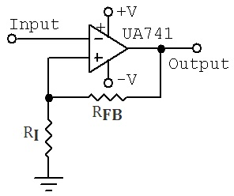

Q.1 A Schmitt trigger is?
A) A comparator with only one trigger point
B) A comparator with hysteresis
C) A comparator with three trigger points
D) None of these
Ans : B
Q.2 The output of a Schmitt trigger is a?
A) Pulse waveform
B) Sawtooth waveform
C) Sinusoidal waveform
D) Triangular waveform
Ans : A
Q.3 The standard supply voltage for an ordinary operational amplifier is?
A) 15 V
B) 13 V
C) 12 V
D) 10 V
Ans : C
Q.4 A comparator with a Schmitt trigger has?
A) Two trigger levels
B) A fast response
C) A slow response
D) One trigger level
Ans : A
Q.5 Refer to the given figure. Determine the lower trigger point, If Ri = 47 KΩ, Rfb = 200 KΩ, Vin = 2.0 Vpp and Vout = 13 Vpp?

A) + V(out)max
B) – V(out)max
C) - 2.47 V
D) + 2.47 V
Ans : C
Sources